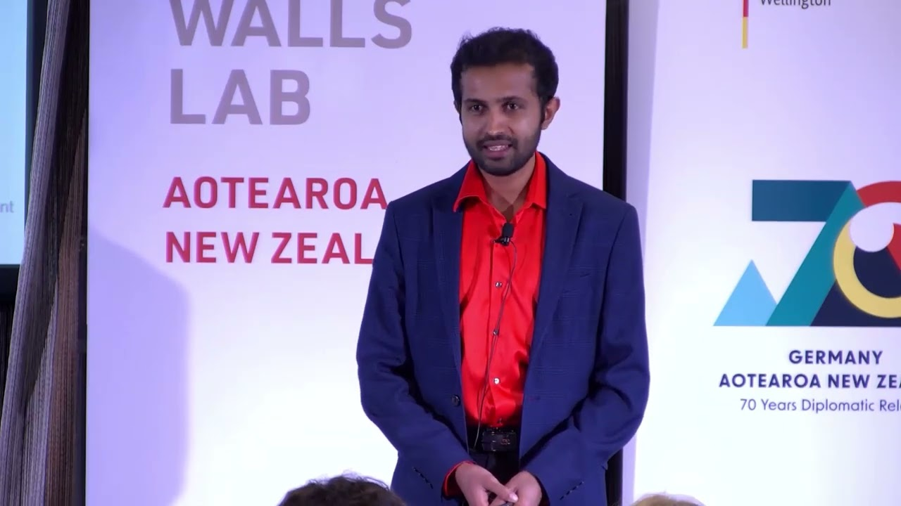

Talks that turn research into something people use.
I speak about multiplayer augmented reality, spatial computing, and — from my book — why teams reach for the wrong answer to conflict. Every talk is grounded in peer-reviewed research or years of classroom practice, and built for audiences who make things.
On stage at NZGDC 2023 — “Creating Sharable Spaces with Lidar”.
Where I speak & present
NZGDC 2023 panel · 2026 talk
IEEE VR 2025 paper
ACM VRST 2026 paper
OzCHI 2025 paper
ACM SUI 2024 paper
Falling Walls Lab Aotearoa NZ 2024 pitch
Tohoku University, RIEC 2025 invited talk
IEEE Women in Engineering Sri Lanka 2026 workshop
Code Champ · IEEE Computer Society Sri Lanka 2026 workshop
IEEE Entrepreneurship Sri Lanka 2026 talk
ICITR · University of Moratuwa 2026 workshop
01
Signature talks
Three talks I give most often. Each works as a keynote or conference talk, and most can run as a hands-on workshop.
01
Designing Shared Worlds Across Distance
What three studies and 128 players taught me about augmented reality that connects people in different places — told for people who build games, products and experiences.
Why showing a remote place at real-world scale creates the strongest sense of “being there”
Why a lightweight cue showing where a remote player is looking coordinated players as well as heavy avatars
How to make AR a core mechanic — real-time manipulation, clear feedback, calibrated time pressure — rather than decoration
KeynoteConference talkHalf-day workshopGame developers · XR teams · Researchers
On the programme at NZGDC 2026 (Auckland) and ICITR 2026 (University of Moratuwa). Based on research with Sony Interactive Entertainment and Niantic.
The Collaboration Reflex: Why Win-Win Is Usually the Wrong Answer
Almost everyone reaches for collaboration when conflict shows up. Forty-five real workplace conflicts show when that works, when it backfires, and what experienced professionals do instead.
The pattern behind the conflicts that went wrong — drawn from forty-five real, anonymised cases
Four frameworks for reading which response a conflict actually needs
In the workshop version, teams analyse each other's anonymised conflicts and practise the better move
Also available as guest lectures: Immersive Technology in Education, UX Research Methods for Emerging Tech and Postgraduate Research Skills — or see the workshop catalogue for hands-on team sessions.
02
Watch me speak
A panel, a three-minute pitch and a long-form conversation — three very different formats.
AR Game Dev Rant — NZGDC 2023Panel on designing and shipping location-based AR

Breaking the Wall of Loneliness Through PlayThree-minute pitch, Falling Walls Lab 2024
New Zealand Software Jobs — PSR VlogPodcast conversation in Sinhala and English
i
Formats & fees. Keynotes, talks and workshops are paid engagements; the fee depends on format, preparation and travel. I speak online worldwide, in person anywhere in New Zealand, and further afield by arrangement. I keep a small number of free sessions each year for student, community and non-profit events — just mention it when you get in touch.
03
Speaker kit
Everything an organiser usually asks for, ready to copy. Bios are written in the third person; edit freely for length.
Short bio 48 words
Dr. Yasas Sri Wickramasinghe is an augmented reality researcher, senior lecturer and software engineer based in Christchurch, New Zealand. A Postdoctoral Researcher at HIT Lab NZ, University of Canterbury, he studies how multiplayer AR can connect people and places across distance, working with Sony Interactive Entertainment and Niantic.
MC introduction about 30 seconds
Our next speaker designs worlds that people can share from opposite sides of the planet. Dr. Yasas Sri Wickramasinghe is an augmented reality researcher at HIT Lab NZ, University of Canterbury, and a senior lecturer at Yoobee College. His research with Sony Interactive Entertainment and Niantic explores how AR can bring people together across distance — and along the way he has built learning platforms and founded an online school. Please welcome Dr. Yasas Sri Wickramasinghe.
Medium bio 111 words
Dr. Yasas Sri Wickramasinghe is an augmented reality researcher, educator and software engineer based in Christchurch, New Zealand. He is a Postdoctoral Researcher at HIT Lab NZ, University of Canterbury, a Senior Lecturer at Yoobee College of Creative Innovation, and the founder of ICT Campus, an online classroom for Sri Lankan students. His PhD research on multiplayer location-based AR games, conducted with Sony Interactive Entertainment and Niantic, is published at IEEE VR, ACM and Elsevier venues. Before academia he was a technical lead in industry, co-founded an AR/VR start-up under the MIT Global Startup Labs programme, and led part of a university MOOC platform that grew to more than 150,000 learners.
Long bio 254 words
Dr. Yasas Sri Wickramasinghe is an augmented reality researcher, university lecturer and software engineer based in Ōtautahi Christchurch, New Zealand. He is a Postdoctoral Researcher at HIT Lab NZ, University of Canterbury, where he earned his PhD in Human Interface Technology, and a Senior Lecturer at Yoobee College of Creative Innovation, where he teaches in the Master of Business Informatics.
His research asks how augmented reality can make meaningful use of the real world to connect people who are physically apart. Across three user studies with 128 participants, conducted with industry partners Sony Interactive Entertainment and Niantic, he designed and evaluated multiplayer location-based AR games — work published at IEEE VR, OzCHI and ACM SUI, in Elsevier's Entertainment Computing, and with a paper at ACM VRST 2026. He has spoken at the New Zealand Game Developers Conference and was selected for Falling Walls Lab Aotearoa New Zealand in 2024.
Yasas began his career in Sri Lanka. He studied IT at the University of Moratuwa, co-founded the AR/VR start-up NavitaZ VR Labs under the MIT Global Startup Labs programme, spent four years as a technical lead at 99X, and lectured at the University of Moratuwa, where he led the Software Engineering strand of an open learning platform that grew to more than 150,000 registered learners. He is the founder of ICT Campus, a bilingual online classroom for Sri Lankan A/L ICT students, and the author of The Collaboration Reflex, a book on why the instinct to collaborate is often the wrong response to workplace conflict.
Yes — over Zoom, Microsoft Teams or Google Meet, anywhere in the world. Recent online sessions include workshops for IEEE Women in Engineering Sri Lanka and Code Champ 2026, and a talk for IEEE Entrepreneurship, Sri Lanka Section.
Can a talk be tailored to our audience?
Always. Each talk is adapted to the audience and the time you have, and I'm happy to develop a custom topic in augmented and virtual reality, human-computer interaction, education or software engineering.
What does it cost?
Keynotes, talks and workshops are paid engagements; the fee depends on format, preparation and travel. I keep a small number of free sessions each year for student, community and non-profit events — mention it when you get in touch.
How far ahead should we book?
As early as you can — in-person events need more lead time than online ones. If your date is close, ask anyway and I'll tell you straight away whether I can do it.
Invitations
Planning an event? Let's make the session worth the room.